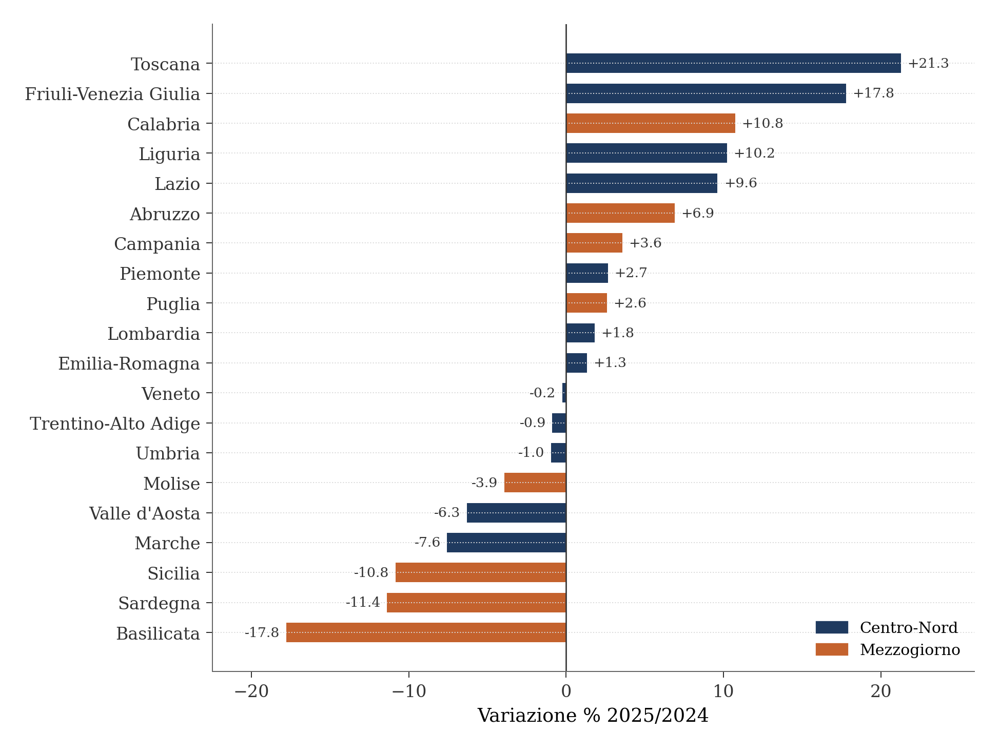
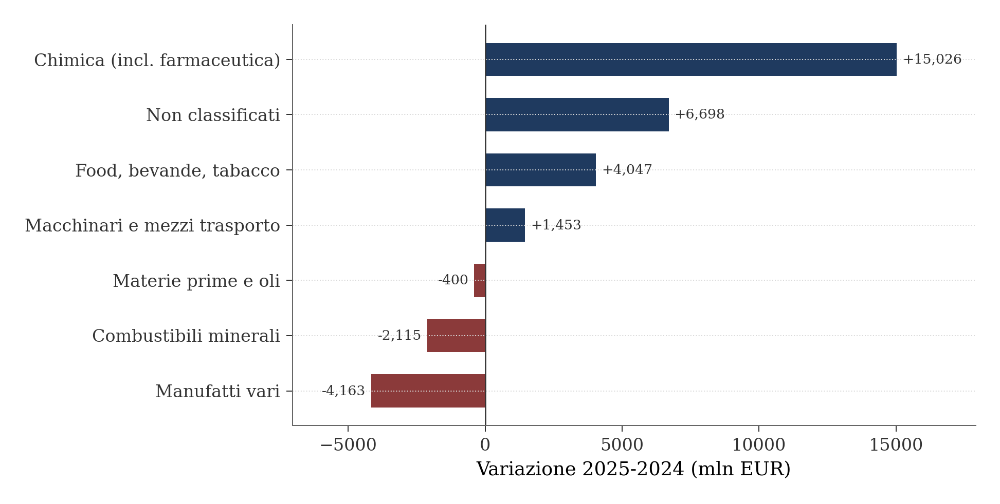
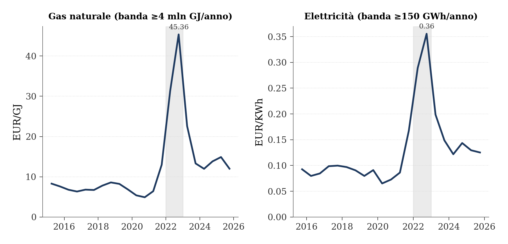
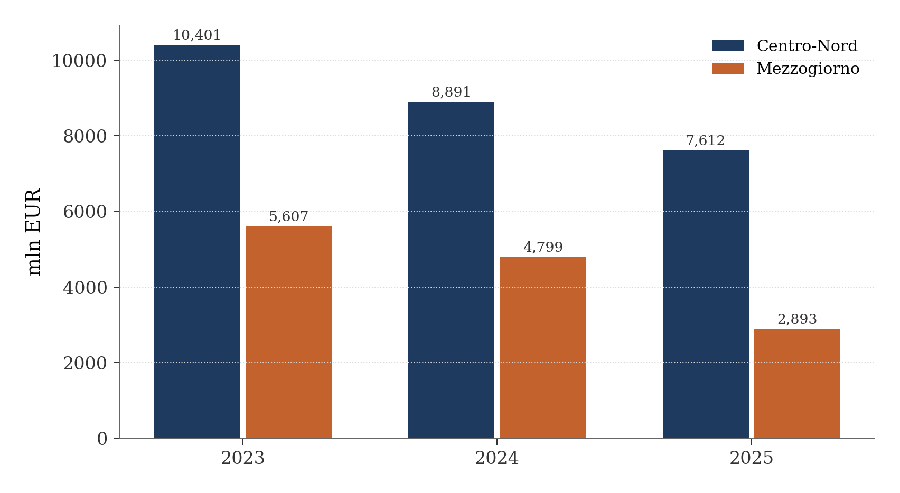

Export italiano e rischio geopolitico — triangolazione PuntoSVIMEZ, Filiere strategiche e dati ICE-Istat
Mezzogiorno, Centro-Nord e vulnerabilità a shock energetici e commerciali
Paolo Volterra ![]()
Il PuntoSVIMEZ di luglio 2026 fotografa un export italiano in crescita del 3,3% nel 2025 (643 miliardi di euro), ma con una dinamica fortemente asimmetrica: il Mezzogiorno arretra (-1,2% al lordo degli energetici) mentre il Centro-Nord cresce (+4,5% al netto degli energetici). La crescita è concentrata nella farmaceutica, che da sola contribuisce per il 75% all’incremento. Questo documento triangola i dati SVIMEZ con le fonti ufficiali ISTAT (Coeweb e comunicati stampa) ed Eurostat (COMEXT, prezzi energia) per validare la base informativa, arricchire la composizione settoriale e quantificare l’esposizione a shock geopolitici: interruzione dello Stretto di Hormuz e dazi USA/UE. L’analisi conferma la piena coerenza tra fonti (scarto massimo 0,02%) e quantifica in circa lo 0,9% dell’export nazionale l’impatto stimato di uno shock Hormuz, concentrato sulle regioni meridionali.
export, Mezzogiorno, Centro-Nord, Svimez, ISTAT, Eurostat, Hormuz, dazi, farmaceutica, energia
1 Il quadro macro: export Italia 2025
Nel 2025 l’export italiano di beni ha raggiunto 643 miliardi di euro, con una crescita del 3,3% rispetto al 2024 [1], [2]. Il dato SVIMEZ e il dato ISTAT-Eurostat coincidono al decimale: il totale Eurostat COMEXT (SITC TOTAL, WORLD) è 643.153 milioni, il comunicato stampa ISTAT sulle esportazioni regionali riporta 643.153 milioni, SVIMEZ arrotonda a 643.000 [3], [4].
La crescita è tuttavia trainata quasi interamente da un solo settore: la farmaceutica. SVIMEZ stima che il 75% dell’incremento 2024–2025 sia attribuibile ai prodotti farmaceutici. L’analisi sui dati Eurostat SITC 1-digit lo conferma: la sezione SITC5 (Chimica, che include la farmaceutica) cresce di 15 miliardi di euro, mentre la crescita stimata della sola farmaceutica è di circa 15,4 miliardi — il 103% della crescita SITC5, a indicare che il resto della chimica (non farmaceutica) è in lieve contrazione.
Al netto della farmaceutica — l’aggiustamento che SVIMEZ applica sistematicamente nelle sue analisi — l’export italiano sarebbe sostanzialmente piatto. Questa concentrazione ha implicazioni regionali importanti: la farmaceutica è geograficamente concentrata in Lazio (41% del totale nazionale), Toscana e Lombardia, tutte regioni del Centro-Nord.
2 Fonti e validazione incrociata
La base informativa di questo documento poggia su tre fonti primarie, verificate per coerenza reciproca:
ISTAT Coeweb: esportazioni e importazioni regionali annuali per sezione ATECO e paese partner. Il dettaglio regionale copre 19 regioni su 21 (le province autonome di Trento e Bolzano non sono comprese) e si ferma alle sezioni ATECO (A-S), senza il dettaglio delle divisioni [2].
ISTAT — Comunicato stampa «Esportazioni delle Regioni italiane»: integra i dati Coeweb con le province mancanti. Il comunicato del Q4 2025 riporta 12.837 milioni per il Trentino-Alto Adige (Bolzano 7.749M, +0,8%; Trento 5.088M, -3,3%) e 11.137 milioni per le «Province diverse e non specificate» (export non territorializzato) [3].
Eurostat COMEXT: esportazioni nazionali per sezione SITC (primo livello della classificazione) e paese partner. La granularità disponibile non consente di separare la farmaceutica (SITC 54) dal resto della chimica (SITC 5), né la siderurgia (SITC 67) dagli altri manufatti (SITC 6) [4].
La coerenza tra le fonti è pressoché perfetta. I totali nazionali ISTAT e Eurostat coincidono (643.153 milioni). I valori per singola regione coincidono tra Coeweb e comunicato stampa (differenza zero sulle 16 regioni confrontabili). L’unica discrepanza è la Basilicata: il dettaglio regionale Coeweb riporta 894 milioni (la sola provincia di Potenza) mentre il comunicato stampa riporta 1.313 milioni, perché include anche la provincia di Matera.
3 Mezzogiorno e Centro-Nord: il divario territoriale
La Tabella 1 del PuntoSVIMEZ riporta per il 2025: Mezzogiorno -1,2% (al lordo degli energetici) e Centro-Nord +4,5% (al netto degli energetici). La ricostruzione con i dati ISTAT completi (Tabella Tabella 1) conferma questi valori con uno scarto inferiore a 0,05 punti percentuali.
| 2024 (mln EUR) | 2025 (mln EUR) | Var % ISTAT | Var % Svimez | Nota | |
|---|---|---|---|---|---|
| Macroarea | |||||
| Mezzogiorno | 64,849 | 64,075 | -1 | -1 | lordo |
| Centro-Nord | 543,304 | 567,942 | 5 | 4 | netto energetici |
| Province diverse | 14,454 | 11,137 | non territorializzato | ||
| ITALIA | 622,607 | 643,153 | 3 | 3 |
Tabella 1: Export per macroarea 2025 vs 2024 — confronto ISTAT e SVIMEZ
La differenza tra la variazione lorda ISTAT del Centro-Nord (+4,53%) e il dato netto SVIMEZ (+4,5%) è coerente con l’esclusione dei prodotti energetici (coke e petroliferi) operata da SVIMEZ: questi settori hanno registrato una contrazione dei prezzi che ha frenato la dinamica lorda; al netto, la crescita sale leggermente.
Il dato di macroarea nasconde però una forte eterogeneità interna, visibile nella Figura 1: dentro il Mezzogiorno convivono le crescite di Calabria (+10,8%), Abruzzo (+6,9%), Campania (+3,6%) e Puglia (+2,6%) e le contrazioni a due cifre di Basilicata (-17,8%), Sardegna (-11,4%) e Sicilia (-10,8%). Per Sicilia e Sardegna pesa l’elevata incidenza dei prodotti petroliferi sull’export regionale, che trasmette il calo dei prezzi energetici del 2025 direttamente ai valori esportati.

Figura 1: Esportazioni per regione: variazione percentuale 2025 su 2024. In arancione le regioni del Mezzogiorno, in blu quelle del Centro-Nord.
Il dettaglio delle otto regioni meridionali (Tabella 2) mostra che il calo aggregato del Mezzogiorno dipende quasi interamente da tre regioni — Sicilia, Sardegna e Basilicata — mentre quattro regioni crescono e il Molise registra una flessione contenuta (-3,9%).
| 2024 (mln EUR) | 2025 (mln EUR) | Var % | Quota % Italia | |
|---|---|---|---|---|
| Regione | ||||
| Campania | 21,948 | 22,733 | +3.6 | 3.5 |
| Sicilia | 13,473 | 12,012 | -10.8 | 1.9 |
| Abruzzo | 9,313 | 9,956 | +6.9 | 1.5 |
| Puglia | 9,643 | 9,894 | +2.6 | 1.5 |
| Sardegna | 6,656 | 5,898 | -11.4 | 0.9 |
| Basilicata | 1,598 | 1,313 | -17.8 | 0.2 |
| Molise | 1,288 | 1,237 | -3.9 | 0.2 |
| Calabria | 931 | 1,031 | +10.8 | 0.2 |
Tabella 2: Export delle regioni del Mezzogiorno — 2024 e 2025 (mln EUR)
Il Mezzogiorno pesa per il 10,0% sull’export nazionale (64.075 milioni su 643.153). La quota sale al 31,3% per i prodotti agricoli (SITC0_1) e al 40,2% per i prodotti estrattivi (SITC3), ma scende al 9,9% per la manifattura (ATECO C). La specializzazione meridionale resta sbilanciata su settori a minore valore aggiunto e maggiore volatilità.
4 Composizione settoriale: oltre la farmaceutica
La disaggregazione SITC 1-digit dell’export italiano (Tabella Tabella 3) mostra la composizione per macro-settore. Il limite della granularità 1-digit impedisce di separare i comparti interni (farmaceutica dalla chimica, siderurgia dagli altri manufatti, meccanica dai mezzi di trasporto), ma la struttura complessiva è informativa.
| Export 2025 (mln EUR) | Quota % | |
|---|---|---|
| Settore | ||
| Food, bevande, tabacco (0+1) | 66,315 | 10.3 |
| Materie prime + oli (2+4) | 11,749 | 1.8 |
| Combustibili minerali (3) | 19,450 | 3.0 |
| Chimica — incl. farmaceutica (5) | 116,066 | 18.0 |
| Manufatti vari (6+8) | 202,694 | 31.5 |
| Macchinari e mezzi trasporto (7) | 207,989 | 32.3 |
| Non classificati (9) | 18,890 | 2.9 |
| TOTALE | 643,153 | 100.0 |
Tabella 3: Export Italia per SITC 1-digit — 2025 (WORLD, mln EUR)
La Figura 2 scompone la crescita dell’export 2024–2025 per macro-settore. La sezione chimica (che include la farmaceutica) contribuisce per 15,0 miliardi, pari a circa tre quarti della crescita netta complessiva (20,5 miliardi) — un quadro coerente con la stima SVIMEZ del 75% di contributo farmaceutico. Colpisce anche il contributo della voce residuale dei prodotti non classificati (+6,7 miliardi), che comprende tra l’altro l’oro non monetario, mentre i combustibili minerali e i manufatti tradizionali sottraggono valore, i primi per effetto del calo dei prezzi energetici.

Figura 2: Variazione dell’export italiano 2025 su 2024 per macro-settore SITC (mln EUR). La chimica, che include la farmaceutica, domina la crescita.
L’allocazione regionale approssimata — basata sui pesi ATECO delle due macroaree — indica che il Mezzogiorno ha un vantaggio comparato nell’agroalimentare (31,3% del totale nazionale) e nell’estrazione (40,2%), mentre è sotto-rappresentato in tutti i comparti manifatturieri, con una quota fissa al 9,9% (pari al peso ATECO C del Mezzogiorno sul totale nazionale). Questa è però un’approssimazione: in assenza di dati SITC 2-digit a livello regionale, non è possibile misurare la specializzazione relativa nei singoli sottosettori manifatturieri.
5 La struttura produttiva delle regioni meridionali
Le sezioni precedenti guardano al Mezzogiorno dal lato del commercio estero. Per completare il quadro conviene guardare anche a che cosa le regioni meridionali producono, indipendentemente dal fatto che il prodotto venga esportato o assorbito dal mercato interno. La fonte sono le statistiche strutturali sulle imprese, che riportano fatturato e valore aggiunto per regione e divisione di attività economica; l’ultimo anno disponibile con dettaglio regionale è il 2023, quindi il confronto con i dati di export del 2025 va letto tenendo conto dello scarto temporale [5].
Il perimetro considerato è l’industria in senso stretto: le divisioni manifatturiere (codici 10–33), l’estrazione di minerali (B), la fornitura di energia (D) e il ciclo idrico e dei rifiuti (E). Restano fuori l’agricoltura, che queste statistiche non coprono, le costruzioni e il commercio. In alcune celle il dato non è disponibile perché la fonte lo oscura per motivi di riservatezza quando gli operatori sono pochi: è il caso della farmaceutica in Campania e della raffinazione in Basilicata. L’assenza non indica assenza di produzione — la farmaceutica campana è anzi il primo settore di export della regione — ma va tenuta presente nella lettura delle tabelle.
5.1 I primi dieci settori di ciascuna regione
Le otto tabelle che seguono riportano, per ciascuna regione, i primi dieci settori industriali per fatturato nel 2023, con la quota sul totale industriale regionale e il valore aggiunto.
| Settore | Fatturato (mln EUR) | Quota % | VA (mln EUR) | |
|---|---|---|---|---|
| Cod. | ||||
| 29 | Autoveicoli e rimorchi | 5,712 | 20.3 | 990 |
| 10 | Industrie alimentari | 2,700 | 9.6 | 579 |
| 25 | Prodotti in metallo | 2,442 | 8.7 | 812 |
| D | Energia elettrica e gas | 2,132 | 7.6 | 512 |
| 17 | Carta | 1,522 | 5.4 | 346 |
| 22 | Gomma e materie plastiche | 1,421 | 5.0 | 403 |
| 21 | Farmaceutica | 1,252 | 4.4 | 393 |
| 23 | Altri prod. minerali non metalliferi | 1,125 | 4.0 | 361 |
| E | Acqua e rifiuti | 979 | 3.5 | 399 |
| 28 | Macchinari n.c.a. | 932 | 3.3 | 304 |
Tabella 4: Abruzzo — primi 10 settori industriali per fatturato, 2023
| Settore | Fatturato (mln EUR) | Quota % | VA (mln EUR) | |
|---|---|---|---|---|
| Cod. | ||||
| 29 | Autoveicoli e rimorchi | 2,278 | 43.2 | 328 |
| 10 | Industrie alimentari | 782 | 14.8 | 152 |
| D | Energia elettrica e gas | 659 | 12.5 | 155 |
| 20 | Prodotti chimici | 231 | 4.4 | 103 |
| 23 | Altri prod. minerali non metalliferi | 219 | 4.1 | 77 |
| 25 | Prodotti in metallo | 175 | 3.3 | 66 |
| 21 | Farmaceutica | 165 | 3.1 | 47 |
| E | Acqua e rifiuti | 157 | 3.0 | 57 |
| 28 | Macchinari n.c.a. | 87 | 1.7 | 24 |
| 22 | Gomma e materie plastiche | 83 | 1.6 | 20 |
Tabella 5: Molise — primi 10 settori industriali per fatturato, 2023
| Settore | Fatturato (mln EUR) | Quota % | VA (mln EUR) | |
|---|---|---|---|---|
| Cod. | ||||
| 10 | Industrie alimentari | 12,338 | 21.4 | 2,499 |
| D | Energia elettrica e gas | 6,787 | 11.8 | 1,611 |
| 29 | Autoveicoli e rimorchi | 5,897 | 10.2 | 963 |
| 25 | Prodotti in metallo | 5,005 | 8.7 | 1,567 |
| E | Acqua e rifiuti | 3,893 | 6.8 | 1,437 |
| 30 | Altri mezzi di trasporto | 2,808 | 4.9 | 1,065 |
| 22 | Gomma e materie plastiche | 2,303 | 4.0 | 548 |
| 33 | Riparazione e manutenzione macchine | 1,999 | 3.5 | 732 |
| 15 | Articoli in pelle | 1,899 | 3.3 | 534 |
| 17 | Carta | 1,720 | 3.0 | 457 |
Tabella 6: Campania — primi 10 settori industriali per fatturato, 2023 (farmaceutica non disponibile per riservatezza)
| Settore | Fatturato (mln EUR) | Quota % | VA (mln EUR) | |
|---|---|---|---|---|
| Cod. | ||||
| D | Energia elettrica e gas | 9,054 | 19.6 | 1,868 |
| 10 | Industrie alimentari | 8,587 | 18.6 | 1,389 |
| 19 | Coke e raffinazione petrolio | 3,897 | 8.4 | 124 |
| 25 | Prodotti in metallo | 2,769 | 6.0 | 1,062 |
| 29 | Autoveicoli e rimorchi | 2,449 | 5.3 | 627 |
| E | Acqua e rifiuti | 2,436 | 5.3 | 1,150 |
| 28 | Macchinari n.c.a. | 2,043 | 4.4 | 613 |
| 33 | Riparazione e manutenzione macchine | 1,690 | 3.7 | 504 |
| 23 | Altri prod. minerali non metalliferi | 1,330 | 2.9 | 428 |
| 30 | Altri mezzi di trasporto | 1,305 | 2.8 | 533 |
Tabella 7: Puglia — primi 10 settori industriali per fatturato, 2023
| Settore | Fatturato (mln EUR) | Quota % | VA (mln EUR) | |
|---|---|---|---|---|
| Cod. | ||||
| 29 | Autoveicoli e rimorchi | 4,196 | 40.5 | 708 |
| D | Energia elettrica e gas | 1,314 | 12.7 | 389 |
| 10 | Industrie alimentari | 1,187 | 11.5 | 317 |
| 25 | Prodotti in metallo | 516 | 5.0 | 175 |
| 24 | Metallurgia | 477 | 4.6 | 72 |
| E | Acqua e rifiuti | 477 | 4.6 | 166 |
| 23 | Altri prod. minerali non metalliferi | 389 | 3.8 | 140 |
| B | Estrazione minerali | 307 | 3.0 | 144 |
| 31 | Mobili | 276 | 2.7 | 65 |
| 28 | Macchinari n.c.a. | 249 | 2.4 | 69 |
Tabella 8: Basilicata — primi 10 settori industriali per fatturato, 2023 (raffinazione non disponibile per riservatezza)
| Settore | Fatturato (mln EUR) | Quota % | VA (mln EUR) | |
|---|---|---|---|---|
| Cod. | ||||
| D | Energia elettrica e gas | 4,800 | 44.9 | 993 |
| 10 | Industrie alimentari | 1,365 | 12.8 | 324 |
| E | Acqua e rifiuti | 836 | 7.8 | 354 |
| 25 | Prodotti in metallo | 656 | 6.1 | 226 |
| 28 | Macchinari n.c.a. | 486 | 4.5 | 51 |
| 19 | Coke e raffinazione petrolio | 388 | 3.6 | 29 |
| 23 | Altri prod. minerali non metalliferi | 387 | 3.6 | 124 |
| 33 | Riparazione e manutenzione macchine | 246 | 2.3 | 79 |
| 20 | Prodotti chimici | 224 | 2.1 | 65 |
| 22 | Gomma e materie plastiche | 209 | 2.0 | 56 |
Tabella 9: Calabria — primi 10 settori industriali per fatturato, 2023
| Settore | Fatturato (mln EUR) | Quota % | VA (mln EUR) | |
|---|---|---|---|---|
| Cod. | ||||
| 19 | Coke e raffinazione petrolio | 16,473 | 37.7 | 541 |
| D | Energia elettrica e gas | 7,535 | 17.2 | 1,817 |
| 10 | Industrie alimentari | 4,518 | 10.3 | 973 |
| E | Acqua e rifiuti | 2,719 | 6.2 | 1,072 |
| 25 | Prodotti in metallo | 1,608 | 3.7 | 579 |
| 20 | Prodotti chimici | 1,547 | 3.5 | 240 |
| 26 | Computer, elettronica e ottica | 1,440 | 3.3 | 686 |
| 23 | Altri prod. minerali non metalliferi | 1,226 | 2.8 | 376 |
| 33 | Riparazione e manutenzione macchine | 1,012 | 2.3 | 455 |
| 11 | Bevande | 871 | 2.0 | 170 |
Tabella 10: Sicilia — primi 10 settori industriali per fatturato, 2023
| Settore | Fatturato (mln EUR) | Quota % | VA (mln EUR) | |
|---|---|---|---|---|
| Cod. | ||||
| 19 | Coke e raffinazione petrolio | 6,241 | 37.1 | 575 |
| D | Energia elettrica e gas | 2,550 | 15.2 | 735 |
| 10 | Industrie alimentari | 2,165 | 12.9 | 393 |
| E | Acqua e rifiuti | 1,001 | 6.0 | 413 |
| 20 | Prodotti chimici | 811 | 4.8 | 34 |
| 11 | Bevande | 757 | 4.5 | 94 |
| 25 | Prodotti in metallo | 696 | 4.1 | 258 |
| 24 | Metallurgia | 640 | 3.8 | 73 |
| 23 | Altri prod. minerali non metalliferi | 433 | 2.6 | 141 |
| 33 | Riparazione e manutenzione macchine | 387 | 2.3 | 168 |
Tabella 11: Sardegna — primi 10 settori industriali per fatturato, 2023
Alcuni tratti emergono con chiarezza. L’industria automobilistica (divisione 29) è concentrata lungo l’asse adriatico-appenninico: è il primo settore in Abruzzo (5,7 miliardi, il 20% del fatturato industriale regionale), in Molise (2,3 miliardi, oltre il 40%) e in Basilicata (4,2 miliardi), ed è al terzo posto in Campania; in Calabria e nelle isole è praticamente assente. Nelle due isole la struttura industriale ruota attorno alla raffinazione del petrolio, che vale 16,5 miliardi in Sicilia e 6,2 in Sardegna. L’industria alimentare e la fornitura di energia sono invece presenti con pesi rilevanti in tutte le otto regioni, e costituiscono la base comune del tessuto industriale meridionale.
Un caso particolare è la metallurgia pugliese, che comprende lo stabilimento siderurgico di Taranto: nel 2023 il settore ha fatturato 976 milioni ma ha registrato un valore aggiunto negativo di 30 milioni — i costi degli input hanno superato il valore della produzione. È il riscontro contabile della crisi dell’ex Ilva discussa nella sezione sulle filiere strategiche.
5.2 La matrice prodotti per regioni
La Tabella 12 riunisce in un unico quadro i settori che compaiono in almeno un top 10 regionale, con le regioni ordinate secondo la sequenza dei codici territoriali europei (da Abruzzo a Sardegna) e i totali di riga e di colonna. I totali sono calcolati sui soli valori disponibili, quindi Campania e Basilicata risultano leggermente sottostimate.
| Abr | Mol | Cam | Pug | Bas | Cal | Sic | Sar | Tot | |
|---|---|---|---|---|---|---|---|---|---|
| D Energia elettrica e gas | 2,132 | 659 | 6,787 | 9,054 | 1,314 | 4,800 | 7,535 | 2,550 | 34,831 |
| 10 Industrie alimentari | 2,700 | 782 | 12,338 | 8,587 | 1,187 | 1,365 | 4,518 | 2,165 | 33,644 |
| 19 Coke e raffinazione petrolio | 356 | 7 | 1,660 | 3,897 | n.d. | 388 | 16,473 | 6,241 | 29,021 |
| 29 Autoveicoli e rimorchi | 5,712 | 2,278 | 5,897 | 2,449 | 4,196 | 13 | 114 | 8 | 20,667 |
| 25 Prodotti in metallo | 2,442 | 175 | 5,005 | 2,769 | 516 | 656 | 1,608 | 696 | 13,866 |
| E Acqua e rifiuti | 979 | 157 | 3,893 | 2,436 | 477 | 836 | 2,719 | 1,001 | 12,498 |
| 23 Altri prod. minerali non metalliferi | 1,125 | 219 | 1,426 | 1,330 | 389 | 387 | 1,226 | 433 | 6,534 |
| 22 Gomma e materie plastiche | 1,421 | 83 | 2,303 | 1,085 | 164 | 209 | 771 | 149 | 6,185 |
| 33 Riparazione e manutenzione macchine | 334 | 43 | 1,999 | 1,690 | 140 | 246 | 1,012 | 387 | 5,851 |
| 28 Macchinari n.c.a. | 932 | 87 | 1,522 | 2,043 | 249 | 486 | 414 | 91 | 5,825 |
| 30 Altri mezzi di trasporto | 925 | 15 | 2,808 | 1,305 | 3 | 65 | 565 | 121 | 5,808 |
| 20 Prodotti chimici | 907 | 231 | 829 | 1,121 | 48 | 224 | 1,547 | 811 | 5,718 |
| 24 Metallurgia | 657 | 52 | 1,550 | 976 | 477 | 85 | 600 | 640 | 5,038 |
| 11 Bevande | 663 | 43 | 826 | 1,293 | 152 | 185 | 871 | 757 | 4,789 |
| 17 Carta | 1,522 | 36 | 1,720 | 482 | 55 | 27 | 206 | 73 | 4,122 |
| 15 Articoli in pelle | 353 | 2 | 1,899 | 906 | 3 | 10 | 17 | 8 | 3,198 |
| 26 Computer, elettronica e ottica | 635 | 28 | 403 | 158 | 18 | 22 | 1,440 | 37 | 2,741 |
| 31 Mobili | 464 | 53 | 303 | 1,173 | 276 | 37 | 167 | 19 | 2,494 |
| 21 Farmaceutica | 1,252 | 165 | n.d. | 549 | n.d. | 6 | 282 | 3 | 2,258 |
| B Estrazione minerali | 292 | 31 | 110 | 182 | 307 | 52 | 436 | 182 | 1,593 |
| Totale | 25,806 | 5,146 | 53,278 | 43,486 | 9,971 | 10,100 | 42,522 | 16,373 | 206,681 |
Tabella 12: Fatturato industriale per settore e regione, 2023 (mln EUR). Settori presenti in almeno un top 10 regionale; n.d. = dato oscurato per riservatezza.
Le prime quattro voci aggregate — energia (34,8 miliardi), alimentare (33,6), raffinazione (29,0) e autoveicoli (20,7) — coprono più della metà del fatturato industriale complessivo delle otto regioni, pari a circa 207 miliardi. La lettura per colonna conferma le gerarchie dimensionali: la Campania ha la base industriale più ampia, seguita da Puglia e Sicilia; il Molise la più piccola. Colpiscono infine due presenze localizzate: la carta in Abruzzo (1,5 miliardi, un ordine di grandezza sopra le regioni vicine) e l’elettronica in Sicilia (1,4 miliardi, legata al polo catanese dei semiconduttori), che non hanno equivalenti nelle altre regioni meridionali.
6 Rischio Hormuz: quantificazione del canale energetico
Lo Stretto di Hormuz è il punto di transito per circa il 20% del commercio mondiale di petrolio e il 30% del gas naturale liquefatto. Un’interruzione — per conflitto, sanzioni o incidente — si trasmetterebbe all’economia italiana attraverso due canali: l’aumento del prezzo dell’energia (gas ed elettricità per l’industria) e la riduzione dei flussi di importazione dai paesi del Golfo.
6.1 Lo shock 2022 come benchmark
La crisi energetica del 2022 fornisce un benchmark per calibrare gli effetti di uno shock Hormuz. I prezzi Eurostat per i grandi consumatori industriali italiani (Tabella Tabella 13) mostrano l’entità della trasmissione [6].
| 2021 (media) | 2022-S2 (picco) | Moltiplicatore | 2024 (media) | vs 2021 | |
|---|---|---|---|---|---|
| Gas (≥4M GJ/anno) | 9.70 | 45.36 | 4.68 | 12.90 | 1.33 |
| Elettricità (≥150 GWh/anno) | 0.13 | 0.36 | 2.80 | 0.13 | 1.05 |
Tabella 13: Prezzi energia per grande industria italiana — shock 2022

Figura 3: Prezzi dell’energia per i grandi consumatori industriali italiani, serie semestrali. L’area evidenziata segna la crisi energetica 2022. Scale e unità diverse nei due pannelli.
Il gas per i grandi consumatori industriali è passato da 9,7 EUR/GJ (media 2021) a 45,4 EUR/GJ nel secondo semestre 2022 — un fattore 4,7. L’elettricità è aumentata di un fattore 2,8 (da 0,127 a 0,356 EUR/KWh). Nel 2024 i prezzi si sono stabilizzati, ma il gas resta al 133% del livello pre-crisi (12,9 EUR/GJ), mentre l’elettricità è tornata sostanzialmente al livello del 2021.
6.2 Dipendenza dal Golfo
L’Italia ha importato dai paesi del Golfo 10,5 miliardi di euro nel 2025, in calo del 34% rispetto ai 16,0 miliardi del 2023 [2]. Il calo — dovuto sia alla discesa dei prezzi energetici sia alla diversificazione dei fornitori — è più marcato per il Mezzogiorno (-48%) che per il Centro-Nord (-27%), come mostra la Figura 4. In direzione opposta, l’export italiano verso il Golfo è cresciuto nello stesso periodo da 18,3 a 21,4 miliardi.

Figura 4: Importazioni dai paesi del Golfo per macroarea, 2023-2025 (mln EUR)
L’import energetico dal Golfo (sezione ATECO B, Estrazione) rappresenta l’11,0% dell’import totale di materie prime energetiche per il Mezzogiorno e il 18,1% per il Centro-Nord. Di questo flusso, tra il 72% (Mezzogiorno) e il 98% (Centro-Nord) transita effettivamente per lo Stretto di Hormuz — l’Arabia Saudita ha un’alternativa parziale via pipeline, Oman e Bahrain sono fuori dallo Stretto.
6.3 Scenario Hormuz
Ipotizzando un’interruzione che porti il prezzo del gas a 2,5 volte il livello 2025 e l’elettricità a 1,8 volte — uno shock paragonabile come moltiplicatore a quello del 2022, ma applicato a un livello di partenza dei prezzi più basso — e assumendo un pass-through del 7% del costo energetico sui prezzi all’export e una quota dell’8% del costo energetico sui costi totali della manifattura, l’impatto stimato sull’export è di circa lo 0,9% del totale nazionale (564 milioni per il Mezzogiorno, 4.616 milioni per il Centro-Nord).
L’impatto relativo è leggermente superiore per il Mezzogiorno (0,89% dell’export della macroarea) rispetto al Centro-Nord (0,83%), a causa della maggiore incidenza dei settori energetici (ATECO B+D) sull’export meridionale (0,5% contro 0,1%). L’impatto assoluto è invece molto maggiore sul Centro-Nord, che ha un’economia di esportazione circa 5 volte più grande.
Le regioni più esposte a uno shock energetico sono Basilicata (6,5% dell’export regionale in settori B+D, per effetto del polo petrolifero della Val d’Agri), Puglia (1,5%, raffineria di Taranto e siti industriali energivori) e Sardegna (1,4%, raffineria di Sarroch e petrolchimico di Porto Torres).
7 Filiere strategiche: il lato produttivo
La newsletter gemella del PuntoSVIMEZ, «Filiere strategiche — Luglio 2026», sposta l’attenzione dal lato commerciale a quello produttivo [7]. I temi trattati — materie prime critiche, siderurgia, batterie, chip, automotive — completano il quadro della vulnerabilità italiana a shock geopolitici.
7.1 Siderurgia e dazio UE 50%
Il 1° agosto 2025 l’Unione Europea ha introdotto un dazio del 50% sulle importazioni di acciaio e alluminio da paesi terzi, nell’ambito della revisione delle misure di salvaguardia. L’impatto è duplice: da un lato protegge la produzione siderurgica europea (incluso l’ex-ILVA di Taranto, ora Acciaierie d’Italia), dall’altro aumenta i costi per i settori a valle (meccanica, automotive, costruzioni) che utilizzano acciaio importato.
I dati SVIMEZ mostrano che nel 2025 il settore Siderurgia ha registrato un export in calo dell’1,5% nel Mezzogiorno e in crescita del 10,6% nel Centro-Nord — un divario che riflette la diversa specializzazione: il Sud è più esposto alla produzione di base (commodity siderurgiche a maggiore concorrenza internazionale), il Nord alla trasformazione a maggiore valore aggiunto.
L’analisi settoriale di dettaglio è limitata dalla granularità SITC 1-digit: la siderurgia (SITC67) è aggregata nei «Manufatti vari» (SITC6_8) e non è isolabile senza dati a 2-digit.
7.2 Materie prime critiche e accordo USA-UE
Il Regolamento europeo CRMA 2024/1252 fissa target al 2030 del 10% di estrazione, 40% di trasformazione e 25% di riciclo per le materie prime critiche. L’Italia è leader europeo nel riciclo (20,8% contro una media UE dell’11,8%) e ha candidato 7 progetti strategici nella seconda fase di selezione europea (marzo 2025), concentrati su litio e nichel. Il PNRR destina 50 milioni alla Missione 7, Investimento 8 per le materie prime critiche.
L’accordo bilaterale USA-UE del 2025 sulle materie prime critiche — distinto dalla questione dazi — crea un quadro di cooperazione per diversificare le fonti di approvvigionamento e ridurre la dipendenza dalla Cina, che controlla circa il 60% della produzione mondiale di terre rare e il 40% della raffinazione del litio.
8 Conclusioni
L’analisi conferma la piena coerenza tra le fonti SVIMEZ, ISTAT ed Eurostat. Le discrepanze residue sono interamente spiegate da fattori tecnici: l’assenza di Trento e Bolzano dall’API SDMX (compensata dai comunicati stampa ISTAT), la mancata copertura di Matera nel dataflow Coeweb (la Basilicata è rappresentata dalla sola provincia di Potenza), e l’esclusione dei prodotti energetici nel dato netto SVIMEZ per il Centro-Nord.
Tre vulnerabilità emergono dall’analisi integrata:
Concentrazione farmaceutica: il 75% della crescita export 2025 è attribuibile a un solo settore, geograficamente concentrato nel Centro-Nord. Il Mezzogiorno è strutturalmente escluso da questa dinamica, e «al netto della farmaceutica» la sua performance è peggiore di quanto appaia dal dato aggregato.
Esposizione energetica: il Mezzogiorno è più vulnerabile a shock sui prezzi dell’energia, per la maggiore quota di export in settori estrattivi e per la presenza di poli industriali energivori (raffinerie, siderurgia) la cui competitività dipende dal costo dell’input energetico. Uno shock Hormuz avrebbe un impatto proporzionalmente maggiore sulle regioni meridionali.
Divario di specializzazione: il Mezzogiorno resta specializzato in settori a minore valore aggiunto e maggiore volatilità (agroalimentare, estrazione, siderurgia di base), mentre il Centro-Nord concentra i settori a maggiore crescita e contenuto tecnologico (farmaceutica, meccanica avanzata, mezzi di trasporto). Le politiche industriali delle «Filiere strategiche» (batterie, chip, materie prime critiche) potrebbero ridurre questo divario, ma i progetti sono in fase iniziale.
Le limitazioni principali di questa analisi riguardano la granularità settoriale: senza dati SITC 2-digit o CPA divisionale, non è possibile separare con precisione i 14 settori Svimez. Un’analisi più fine richiede dati con dettaglio divisionale, non compresi nella base informativa qui utilizzata.
Trasparenza sull’uso dell’intelligenza artificiale
L’uso di strumenti di intelligenza artificiale generativa è dichiarato esplicitamente in quanto parte del processo di lavoro seguito nella redazione del presente documento. Tali strumenti sono stati impiegati a supporto della lettura, della sintesi, della riorganizzazione argomentativa e della revisione testuale, sempre nell’ambito di un processo pienamente controllato dall’autore.
La responsabilità per le fonti utilizzate, le analisi condotte, le verifiche effettuate, le interpretazioni proposte e le conclusioni formulate resta interamente in capo all’autore.
L’intelligenza artificiale è stata utilizzata come ambiente di supporto cognitivo ed editoriale, non come fonte primaria, autore autonomo o sostituto del giudizio critico.